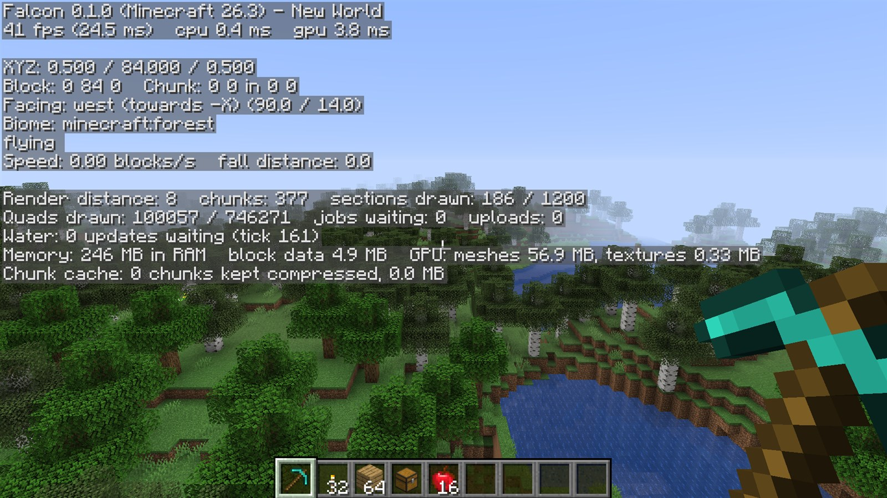
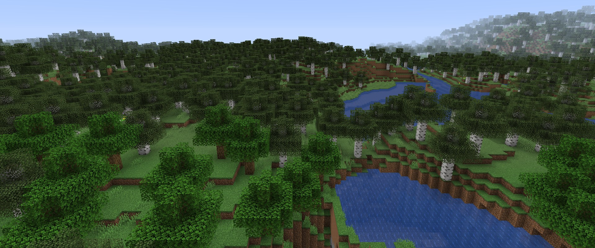

Minecraft: Java Edition 26.3, written from scratch in C++.
Falcon is a client for the game you already own: a native program with its own launcher, no Java, and menus that match the game's own. It starts in a few seconds and needs a fraction of the memory of the Java client.
Windows 10 or 11 · needs a Microsoft account that owns Minecraft: Java Edition · version 1.2.0
What it does
Falcon reimplements the game's client, not the whole game. It reads your own copy of the game's files, so it looks like the game. It is not finished, and the lists below say where.
The game's own menus
Title screen, world list, options, resource packs, the pause menu: drawn from the game's own pictures, sizes and layout rules.
Singleplayer worlds
Terrain from a port of the game's world generator (the same seed gives the same land), caves and ores, survival and creative, an inventory, crafting, chests, furnaces, elytra, food.
Multiplayer
Joins servers of version 26.3, online or offline mode. Other players are drawn as the game draws them: skins, capes, armor, elytra, swimming, sleeping, crossbows.
A small launcher
Signs you in with Microsoft, checks that you own the game, downloads the game's files from Mojang, and starts Falcon. About 9 MB.


What is missing
In singleplayer: mobs, villagers and trading, structures, day and night, weather, clouds, redstone beyond levers, doors and buttons, the anvil, the enchanting table and the brewing stand, and the effects of potions and food. In multiplayer: mounts other than boats and minecarts cannot be steered, and only a test server in offline mode has been tried so far. The full list is in the README.
Benchmarks
Falcon and the vanilla Java client, 26.3, in the same world (same seed), at render distance 8, on one PC. Falcon starts about three times faster once its caches exist and uses about a sixth of the memory. No frame-rate comparison with vanilla was run, and vanilla does more work than Falcon does, so read the caveats below before quoting these.
From starting the program to being in the world
Seconds, lower is better. A new world that has to be generated, at render distance 8.
Vanilla: 15.2 s and 15.6 s in two runs. Falcon, first start (its caches of blocks, shapes and recipes are built): 9.2 s, 9.2 s, 9.1 s. Falcon, later starts: 5.3 s and 5.3 s (render distance 8 and 16).
Memory 30 seconds after the world is ready
Megabytes of working set (what the Windows Task Manager shows for the process), lower is better. Render distance 8.
Private memory (what the process has committed): vanilla 2296 MB, Falcon 370 MB. Falcon at render distance 16: 392 MB working set, 521 MB private. Vanilla was run with the official launcher's default heap limit, -Xmx2G. The vanilla figures are from one run, Falcon's from three.
The launcher
Measured on the same PC.
| Window and splash on screen | about 20 ms |
|---|---|
| Page ready to use | about 0.3 s |
| Memory, all processes together | about 65 MB |
Most of the 65 MB is the system's web view that draws the page; the launcher's own process is 2.7 MB.
The world renderer against its own earlier version
Not a comparison with vanilla. The same fixed flight over the terrain, the renderer before and after occlusion culling and multi-draw, render distance 32.
| before | after | |
|---|---|---|
| GPU time of the world pass | 9.60 ms | 6.40 ms |
| CPU time per frame | 3.68 ms | 2.36 ms |
| Draw calls per frame | about 17,000 | 3 |
The pictures are pixel-identical. The write-up, with what did not help, is docs/performance.md.
What these numbers do not say
- Vanilla does more. It generates structures and every feature of the world, runs mobs (animals were in view), particles and the server's whole tick. Falcon's singleplayer has none of those yet. Part of the difference is work Falcon does not do.
- No frame rate comparison. I did not measure vanilla's frames per second, so there is no claim about it. Falcon's frame times are only compared with Falcon's.
- How "in the world" was timed. Vanilla: until its log says the player has logged in, which is a moment before the first picture of the world, so this favours vanilla slightly. Falcon: until it says the spawn area is loaded.
- Different windows. The vanilla runs were in a visible 854x480 window; Falcon's were in a hidden window of that size (the memory and the time to load do not depend much on it, the frame rate would). Falcon's player stood still at the spot where vanilla spawned.
- Few runs, one PC. Two vanilla runs for the start, one for memory; Ryzen 5 5600G, Radeon RX 580 2048SP, 16 GB, Windows 10, Java 25. Take them as the size of the difference, not as exact figures.
- Both used the same options (vsync off, frame cap off, clouds off, minimal particles, no entity shadows). The world, the scripts and the exact method are in the repository, under
tools/vs_vanillaand docs/vs-vanilla.md.
How it works
Falcon contains no Minecraft textures, sounds or code. It uses the files of a copy of the game you own, and it asks Mojang whether you own it.
1. Sign in
The launcher opens Microsoft's own sign-in page. Your password never goes through Falcon. It then checks with Mojang that the account owns Java Edition.
2. Download
On the first Play, the launcher downloads the game's pictures, sounds and languages from Mojang's servers (the same ones the official launcher uses), and Falcon's data tables (about 2.4 MB, checked against a hash) from this project's release.
3. Play
It starts the client, which checks again with Mojang that the account owns the game before it opens.
Questions
Is Falcon made by Mojang or Microsoft?
No. It is an independent project, not approved by or connected to Mojang or Microsoft. "Minecraft" is a trademark of Mojang Synergies AB.
Do I need to buy Minecraft?
Yes. The launcher only works for a Microsoft account that owns Minecraft: Java Edition, and the client checks it again.
What are the "data tables"?
The singleplayer world needs lists the game derives from its own data: block and item numbers, block shapes, recipes' helpers and the like. They are about 2.4 MB, published with each release as falcon-data-26.3.zip, and the launcher refuses a copy whose hash is not the one it carries. They are facts about the game's data, not its pictures, sounds or code.
Why does the sign-in page say "Minecraft"?
Falcon uses the Minecraft launcher's public sign-in identity, as other third-party launchers do, so no registration is needed. The consent page therefore names the official app. Falcon is not an approved application of Mojang's, and Mojang could change what that identity accepts.
Does it work on Mac or Linux?
No, Windows only for now.
Can I use it on a server?
It joins servers of version 26.3 in online and offline mode. So far it has mostly been tried against a test server in offline mode. Some servers kick unknown clients, and anti-cheat plugins may object to it; use it at your own risk.
Where is the code?
On GitHub, under the Apache 2.0 licence.